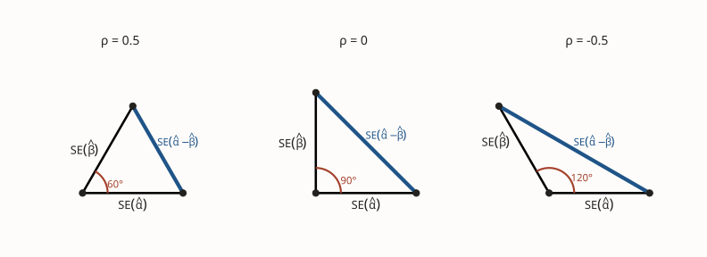

Inference & uncertainty 22 November 2025 6 min Part II of II
Overlapping Confidence Intervals: Part II
In my earlier post on Overlapping Confidence Intervals I asked what we can learn from the overlap, or lack thereof, between confidence intervals for two population means constructed using independent samples. To recap: if the individual confidence intervals for groups A and B do not overlap, there must be a statistically significant difference between the population means for the two groups. In other words, the interval for the difference of means will not include zero. If the individual intervals do overlap, on the other hand, anything goes. The interval for the difference of means may or may not include zero. Indeed, it’s even possible for the individual intervals for both A and B to include zero while the interval for their difference does not!
In Part I we found a way to rephrase our statistical problem about overlapping confidence intervals as a familiar geometry problem involving right triangles. We then solved this geometry problem using the Pythagorean Theorem and Triangle Inequality. To build the connection between confidence intervals and right triangles, however, we assumed that our two estimators were uncorrelated. Unfortunately this assumption fails in many interesting real-world applications. Today we’ll ask what happens to our earlier conclusions about overlapping intervals if we allow for correlation.
1 A Word About Notation
While I phrased my first post about overlapping intervals in terms of sample and population means for two groups, the idea is general. Nothing substantive changes if we replace the parameters \((\mu_A, \mu_B)\) with \((\alpha, \beta)\), the estimators \((\bar{A}, \bar{B})\) with \((\hat{\alpha}, \hat{\beta})\), and the standard errors \(\left(\text{SE}(\bar{A}), \text{SE}(\bar{B})\right)\) with \(\left(\text{SE}(\hat{\alpha}), \text{SE}(\hat{\beta})\right)\). As long as the two estimators are uncorrelated and (approximately) normally distributed, the results from Part I apply to the individual intervals for \(\alpha\) and \(\beta\) versus the interval for the difference \(\alpha-\beta\). Today we will ask what happens when the estimators are potentially correlated. To make it clear that our results are general, I’ll use the more agnostic \((\alpha,\beta)\) notation throughout.
2 A Motivating Example
Consider a randomized controlled trial with two active treatments. In our paper on pawn lending, for example, my co-authors and I compare default rates between borrowers assigned to the status quo pawn contract (control), a new structured contract (Treatment A), and a choice arm (Treatment B) in which they were free to choose whichever contract they preferred. To learn the causal effect of the structured contract, we compare the mean default rates of borrowers who received Treatment A against the corresponding rate in the control group. Call this difference of means \(\hat{\alpha}\). Similarly, to learn the effect of choice, we make the analogous comparison between Treatment B and the control group. Call this difference of means \(\hat{\beta}\). Now suppose you’re reading a paper that reports both of these estimators and their standard errors. To find out which treatment is more effective, you need to compare \(\hat{\alpha}\) and \(\hat{\beta}\), but these estimators must be correlated because they both involve the control group average: \[ \begin{aligned} \hat{\alpha} &= \text{(Treatment A mean)} - \text{(Control Group mean)}\\ \hat{\beta} &= \text{(Treatment B mean)} - \text{(Control Group mean)}. \end{aligned} \] Granted, if you had access to the raw data, you could easily solve this problem without worrying about the correlation. In the difference \(\hat{\alpha} - \hat{\beta}\), the control group mean cancels out \[ \hat{\alpha} - \hat{\beta} = \text{(Treatment A mean)} - \text{(Treatment B mean)}. \] So if we had the raw data for treatments A and B we’d be back to a familiar independent samples comparison of means, as in Part I. But if you’re reading a paper that only reports \((\hat{\alpha}, \hat{\beta})\) and their standard errors, you cannot directly calculate the standard error for the difference. The common variation from the control group mean is baked into the way both \(\text{SE}(\hat{\alpha})\) and \(\text{SE}(\hat{\beta})\) are computed, even though this variation is irrelevant for \(\text{SE}(\hat{\alpha} - \hat{\beta})\).
3 Allowing Correlation
So how do we compute \(\text{SE}(\hat{\alpha} - \hat{\beta})\) if the two estimators are correlated? Recall that the standard error is the standard deviation of that estimator’s sampling distribution, and a standard deviation is merely the square root of the corresponding variance.1 Using the properties of variance and covariance, \[ \text{Var}(\hat{\alpha} - \hat{\beta}) = \text{Var}(\hat{\alpha}) + \text{Var}(\hat{\beta}) - 2\text{Cov}(\hat{\alpha}, \hat{\beta}). \] Defining \(\rho \equiv \text{Corr}(\hat{\alpha},\hat{\beta})\), it follows that \[ \text{SE}(\hat{\alpha} - \hat{\beta})^2 = \text{SE}(\hat{\alpha})^2 + \text{SE}(\hat{\beta})^2 - 2\rho \cdot \text{SE}(\hat{\alpha}) \cdot \text{SE}(\hat{\beta}). \] If \(\rho = 0\) this reduces to our formula from Part I: \(\text{SE}(\hat{\alpha} - \hat{\beta})^2 = \text{SE}(\hat{\alpha})^2 + \text{SE}(\hat{\beta})^2\) so we can equate the LHS with the length of the hypotenuse of a right triangle whose legs have lengths \(\text{SE}(\hat{\alpha})\) and \(\text{SE}(\hat{\beta})\). If \(\rho \neq 0\), however, this connection to the Pythagorean Theorem no longer holds. Nevertheless, there are still triangles hiding in this standard error formula! To reveal them, we need a more general theorem about triangles.
1 Many people, including most econometricians, reserve the term standard error for an estimate of this standard deviation. I prefer to call this estimate the estimated standard error. Clearly my convention is better and everyone should adopt it :)
4 The Law of Cosines
Consider a triangle whose sides have lengths \(a,b\) and \(c\). Let \(\theta\) be the angle between the sides whose lengths are \(a\) and \(b\). Then by the Law of Cosines
\[
c^2 = a^2 + b^2 - 2\cos(\theta) \cdot ab
\] This equality holds for any triangle. For a right triangle whose legs have lengths \(a\) and \(b\), we have \(\theta = 90°\) so the Law of Cosines reduces to the Pythagorean Theorem \[
c^2 = a^2 + b^2.
\] When \(\theta \neq 90°\), the “correction term” \(-2\cos(\theta)\cdot ab\) shows how the length of \(c\) differs from that of a right triangle with legs of lengths \(a\) and \(b\). When \(\theta < 90°\) the cosine is positive so the correction term shortens \(c\); when \(\theta > 90°\) the cosine is negative so the correction term lengthens \(c\). Regardless of the angle \(\theta\), however, the Triangle Inequality still holds: \(c < a + b\) because the shortest distance between two points is a straight line.2
2 Here I assume that this is a genuine triangle rather than three points on the same line.
5 From Geometry to Statistics
The cosine of an angle is always between negative one and one. Can you think of anything else that shares this property? That’s right: correlation! So let’s put the Law of Cosines and our standard error formula from above side-by-side: \[ \begin{aligned} c^2 &= a^2 + b^2 - 2\cos(\theta) \cdot ab\\ \\ \text{SE}(\hat{\alpha} - \hat{\beta})^2 &= \text{SE}(\hat{\alpha})^2 + \text{SE}(\hat{\beta})^2 - 2\rho \cdot \text{SE}(\hat{\alpha}) \cdot \text{SE}(\hat{\beta}). \end{aligned} \] The analogy is perfect. We can view \(\text{SE}(\hat{\alpha})\) and \(\text{SE}(\hat{\beta})\) as the lengths of two sides of a triangle and \(\rho\) as the cosine of the angle between these sides. This makes \(\text{SE}(\hat{\alpha} - \hat{\beta})\) the length of the third side, indicated in blue in the following diagram. When \(\rho\) is positive, the standard error of the difference is smaller than it would be under independence; if \(\rho\) is negative, the standard error of the difference is larger than it would be under independence.

6 The Grand Finale
Since we’ve equated \(\text{SE}(\hat{\alpha} - \hat{\beta})\), \(\text{SE}(\hat{\alpha})\) and \(\text{SE}(\hat{\beta})\) with the sides of a triangle, the Triangle Inequality gives \[ \text{SE}(\hat{\alpha} - \hat{\beta}) < \text{SE}(\hat{\alpha}) + \text{SE}(\hat{\beta}) \] assuming that \(|\rho| < 1\). And now we’re on familiar ground. Let \(z\) be the appropriate quantile of a normal distribution, i.e. \(z \approx 2\) for a 95% confidence interval. Just as we argued in Part I, the individual confidence intervals for \(\alpha\) and \(\beta\) overlap precisely when \((\hat{\alpha} - \hat{\beta})/z < \text{SE}(\hat{\alpha}) + \text{SE}(\hat{\beta})\) and there is a significant difference between the two parameters when \((\hat{\alpha} - \hat{\beta})/z > \text{SE}(\hat{\alpha} - \hat{\beta})\). The condition for overlap and a significant difference is \[ \text{SE}(\hat{\alpha} - \hat{\beta}) < \frac{\hat{\alpha} - \hat{\beta}}{z} < \text{SE}(\hat{\alpha}) + \text{SE}(\hat{\beta}) \] which holds by the Triangle Inequality. So we’re back to exactly the same situation we were in when \(\rho = 0\)! As long as \(\rho \neq -1, 1\) the same results concerning confidence interval overlap apply when \(\hat{\alpha}\) and \(\hat{\beta}\) are correlated as when they are uncorrelated:
- Overlap doesn’t tell us anything about whether there is a significant difference, but
- a lack of overlap implies that there must be a significant difference.